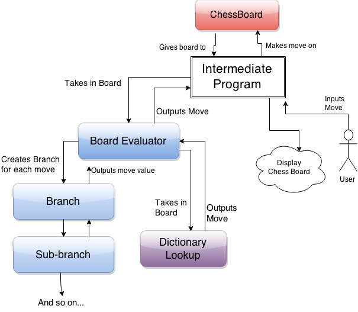

Our Project
Our project was to develop a program that could play chess competitively against us. We made a chess AI using a minmax search algorithm with alpha-beta pruning, then incorporated a dictionary lookup to help the AI make opening moves before the search tree encounters piece captures.
Motivations:
We were interested in going beyond classic chess algorithms, but for this project we focused on understanding the theory behind existing chess algorithms and making a working AI with some improvements over simple AI algorithms.
Understanding Min-Max search trees:
The basis of our AI is a min-max search tree which looks as many moves ahead as it can before running out of time. This search tree tries to find the best move by calculating the opponents reaction move, then calculating its next move, repeating for as many layers as it can. Because of the number of possible chess moves, the computations required in each successive layer grows at a rediculous rate (the exact rate depends on the number of possible moves associated with each chess board), so given 15 seconds to make a move, our algorithm is only able to look 3 moves ahead.
 Image courtesy of wikipedia
Image courtesy of wikipedia
The above diagram illustrates how a min-max search tree works. The numbers represent evaluations of board states, where higher values are better for the AI and lower values are better for the AI's opponent. The top layer represents the current board state, from which the AI must choose any of the three board states in the 2nd layer by making a move. Naturally, the AI chooses the move that leads to the highest value board state. The board state which is passed from the 3rd layer up to the 2nd represents the opponent's move. The AIs opponent will make a move selecting the lowest value board state from the 3rd layer (worst for the AI), so the second layer is a "min" layer. The next layer again represents the AI's move, making it a "max" layer, and so on.
Alpha-Beta pruning
Alpha-beta pruning is a method for speeding up min-max calculations by eliminating board evaluations which can be shown to be irrelevent before they are calculated. Look again at the min-max search tree above. Assuming the algorithm runs its calculations down the tree from left to right, the greyed out boxes show calulations which alpha beta pruning would cut off. If you look two layers above each of the double red lines, you can see that no matter the value in the gray box, that value would not be selected. For example, if the gray 5 in the lower left portion of the diagram were a 2, the 4 in the next layer up would be replaced with the 2, but the 5 above that would still select for the value 5, not 2. The program keeps track of this in "min" layers by keeping track of the value which would currently be selected by the "max" layer above. If the "min" layer finds a value lower than the existing max value, then it stops searching down that branch because even if a lower value is found, the max layer above will select away from that branch.
Dictionary Lookup
One problem with min-max algorithms is the opening moves. In the first few moves of a chess game, pieces are very rarely captured, mening that a classic min-max algorithm would make a mostly random move. One way to aid this is to use a dictionary of moves people have made in real chess matches. Rather than making a random move, this method would look for a game which had the current board state and make a move which someone has made in that situation. We tracked eventual wins and losses after each move, so if a board state occurs more than once in the dictionary we can select the move with the best win percentage. Under the assumption that moves which result in winning the game are good moves, we decided to continue using this dictionary lookup approach until we get to a board state which doesn't appear in the dictionary.
Our Code
We implemented all of the elements we described above, starting with the min-max search, then incorporating alpha-beta pruning, and finally adding the dictionary lookup. Below is a diagram of our final code structure.

Image courtesy of Sean Carter
We found an existing chess game implementation (ChessBoard) and made an intermediate program to accept both user inputs and AI inputs. This intermediate program can output an ascii representation of the chess board so a user can see the board and input a move. The program can also output a standard string representation of the chessboard (FEN) to the AI, which then inputs a move in the same way as a user. the AI has a base board evaluation class which decides whether to use dictionary lookup or min-max searching. During min-max searching, the it also keeps track of how many layers are evaluated and how much time is left. The evaluation class makes instances of the branch class for each possible move. These branches then recursively make more branches down the search tree. Branches execute the min-max search algorithm by selecting the appropriate sub-branch from the layer below or evaluating the board state if they are at the bottom layer.